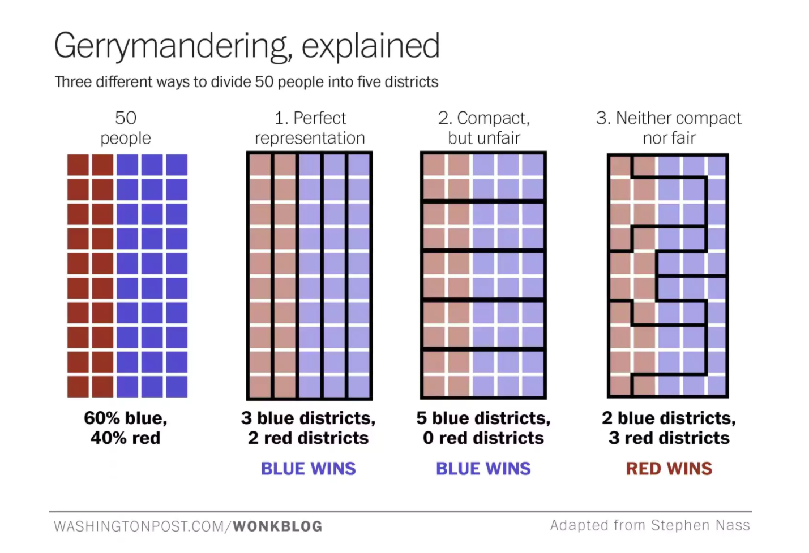

The United States of Gerrymandering
A Primer on Gerrymandering, Fair Districting, and its Impacts on Representation
A Tradition as Old as the Republic
Gerrymandering, or the practice of manipulating electoral district boundaries for political gain, is a practice as old as America itself.
Where the lines are drawn affects both state and federal elections. For Congressional elections, states are divided into districts based on how many representatives they send to the House of Representatives.
In these cases, partisan gerrymandering is often used to maximize the wins for their own party.
Many of the resulting districts end up as strange, winding shapes that intentionally include or exclude populations for political gain.
As a result, even though Party A may win the popular vote, Party B may end up sending more representatives to congress.
Whoever decides the lines decide whose vote is reflected. This can skew statewide representation, dilute minority votes, split communities.
What makes a district?
District lines are redrawn every 10 years to reflect the updated populations taken by the US Census.
In most states, district lines are drawn by the majority party of the state legislature and approved by governor. Even in states with alternative processes, like Independent Commissions, there are seats specifically reserved for Democratic or Republican appointees, so there are no truly non-partisan redistricting committees.
The Art and Science of Map Manipulation
The goal of gerrymandering is to maximize the number of districts that will vote for your party. There are multiple ways to do that, primarily being:
- “Cracking” - separating interests into different districts for vote dilution
- “Packing” - over concentrating similar interests for vote wastage
Ideally, a map can place all of your opponent’s supporters into a few districts (that will definitely be lost). The rest of your supporters can be spread out evenly amongst the districts so you win a comfortable majority of a district.
This partisan distribution requires balancing the risk of maintaining a comfortable lead with the need of minimizing vote wastage.

Gerrymandering can be done for a variety of reasons, such as bipartisan “sweetheart” gerrymandering to favor the incumbents and the status quo or racial gerrymandering to dilute the voting power of certain demographic groups.
In some cases, gerrymandering can even be positive, by grouping minority interests together in order to give their community a voice in government. Many states even require districts not separate communities of interest when drawing the lines.
There is a fine line between packing and cracking where an appropriate amount of community representation falls. The ambiguity of the situation is exacerbated by the lack of standard measurements of fairness.
The Quest to Define Fairness
Compactness - ratio of perimeter/area [0:1, 1 is ideal]
Efficiency gap - measures both wasted votes and diluted votes
Find Wasted Votes: ratio of net wasted votes/total votes cast
Find Seat Advantage: compare to how many seats were won
Tracing the legal and cultural history of gerrymandering
click on an event to see more here
How gerrymandered is your district?
Mouse over to explore the 2014 elections:
Click on a district to learn more.
Efficiency Gap:
Election Outcome:
Total contested Seats:
Demographic charts: Race, Income, Education levels for selected district.
Issues: enter/exit pattern, async data loading
Is there any other way?
- Proportional representation - uniquely solves judicial meddling, natural geographic clustering
- Ranked choice voting
- Independent redistricting commissions (Canada shifted to ICs in 1960s - problem is US lets politicians name appointees to district)
- Election commission
- Algorithms (equal # of voters, compactness) - but ignores communities of interest